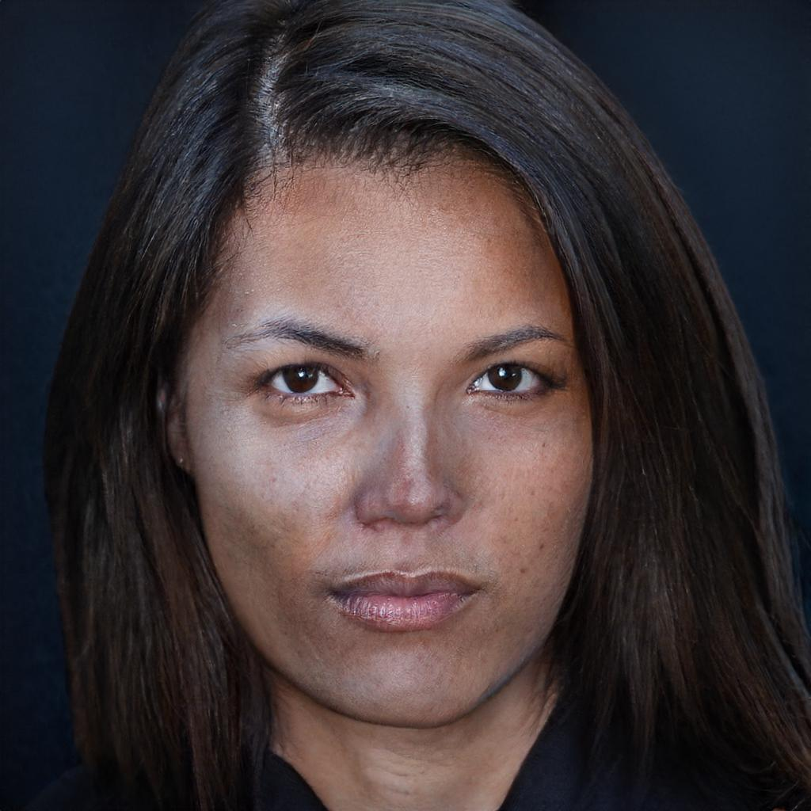
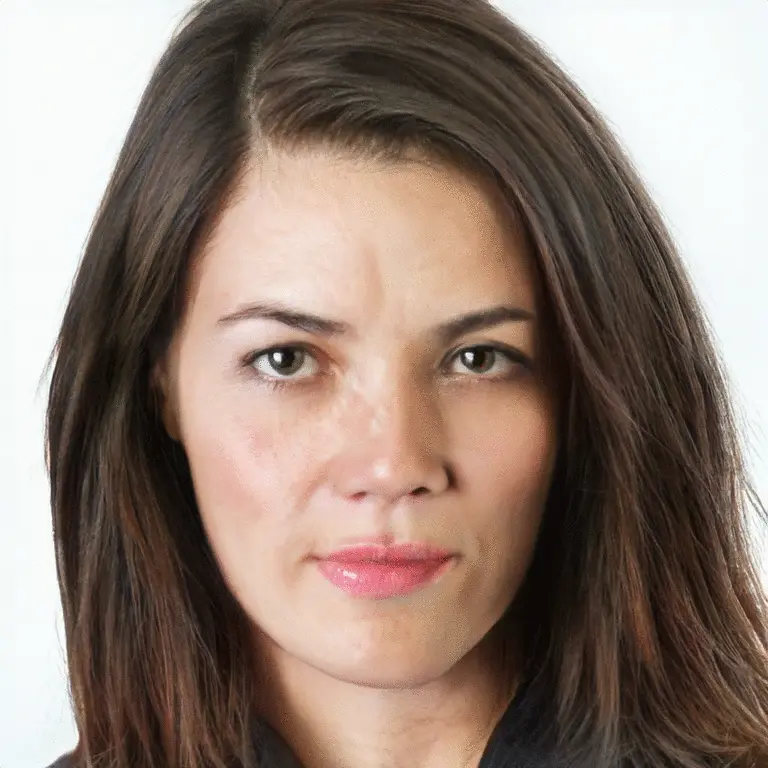
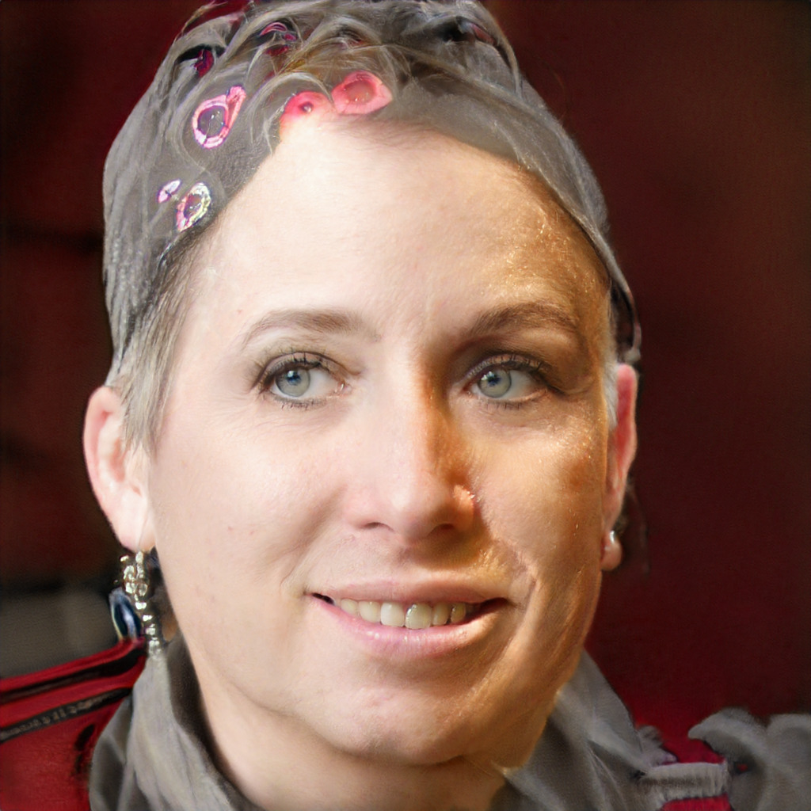

This is the second post from micro-series preceding the SFI conference. In the first post I showed how easy it is to do the style transfer at home. Now, I would like to present you how to play with StyleGANv2. StyleGANv2 is the second version of StyleGAN, they are very similar in core principals. We will be working with StyleGANv2 but I will refer to it as SG. There is a lot that can be said/explained about SG. Here I would like to focus on showing how to make your own experiments with SG instead of getting into SG’s details.
{kind=link}
The post is divided in two parts. In the first, I present some results and ideas behind them. In the second, I show how to obtain similar results and what can you do on your own computer (with an access to the internet).
What do I need to know about StyleGAN before the experiments?
Simple face generations
StyleGAN is a computer vision model that is able to create a high-resolution portraits (1024x1024px) from a random vector $z$ of length 512 (sic!).
This photorealistic image has been generated from random vector $z$. This person DOES NOT EXIST! Isn’t that crazy? It’s just the beginning.
Actually SG first transforms vector $z_1\in \mathbb{R}^{512}$ to set of style vectors $w_1\in\mathbb{R}^{512 \times 18}$ and generates face from them. This is important for our later experiments.
As for now let us sample different $z_2$ and generate face from this vector.
Style vectors mixing
Researchers discovered that the first style vectors of $w$ are responsible for general shape of face, gender, while some later are responsible for style, i.e., color of skin, hair.
Since almost any vector $w$ (created from random vector $z$) will give us some face, we can also interpolate between different $w$! This will happen if we take vectors 1 to 10 from $w_1$, and vectors 11 to 18 from $w_2$:

Crazy, huh? It goes further, we can take less layers from $w_1$, for example take layers 1 to 7 from $w_1$ and 8 to 18 from $w_2$. This introduces more features from $w_2$ into result:
We can also generate faces from $w_i$ interpolated between $w_1$ and $w_2$. For example if we would like to have $n=30$ faces in-between we can create them from the following $w_i$
$$ w_k = \left(1 - \frac{k}{n}\right) w_1 + \frac{k}{n} w_2, \quad k = 1..n $$
Animation from generated faces from $w_i$

“Excuse me, where is the age direction?”
There exist particular linear directions in $w$ space, that are responsible for aging or turning head! This means that once we discover direction $a_{pose}$ we can rotate the face to the left by generating face from $w_1 - 5 a_{pose}$, we can also rotate face to the right by generating from $w_1 + 5 a_{pose}$. We can also generate the image for some intermediate poses and create the gif:
Real face editing
So far we have operated on faces generated from random vectors. This might be a great fun, but we might want to edit some photo using StyleGAN. Surprisingly enough it is somehow possible with encoder4editing! Using this technique along with aging and pose directions we can create interesting mashups. Following a common pattern to use the US presidents for benchmarking CV algorithms, I present you the mashup between aging presidents Andrzej Duda and Volodymyr Zelenskyy.

StyleGAN and e4e at home
Similarly to the previous post, encoder4editing model authors provided a colab notebook for experimenting!

Here it will not be as easy and straightforward as earlier because the model is not included in any kind of model zoo. You have to follow the notebook step by step, cells might require some time to run. On one point, you will have to grant the Google Cloud SDK access to your Google Drive. It will be necessary to download the pretrained e4e model and load it into your colab environment (model weights over 1GB), don’t be scared (the code will do it automatically for you).
Some explanations regarding experiments in the notebook:
ffhq_encode- our focus, StyleGAN trained on FFHQ - dataset of high quality imagescars_encode- StyleGAN on carshorse_encode- StyleGAN on horsechurch_encode- StyleGAN on church
Working with real images approximations
To provide your own photo for e4e to use, you can upload your photo to colab (I explained it in the previous post) and change the first line in cell:
image_path = EXPERIMENT_DATA_ARGS[experiment_type]["image_path"]
original_image = Image.open(image_path)
original_image = original_image.convert("RGB")
to
image_path = "path_to_image.jpg"
In section:
with torch.no_grad():
tic = time.time()
images, latents = run_on_batch(transformed_image.unsqueeze(0), net)
result_image, latent = images[0], latents[0]
toc = time.time()
print('Inference took {:.4f} seconds.'.format(toc - tic))
you get latents, the key part of what you need.
This is what we called $w$ and is later used to generate the face.
If you have latents, you can create image from them with
with torch.no_grad():
img_t, _ = net.decoder(latents.unsqueeze(0), input_is_latent=True, randomize_noise=False)
img_t = img_t.squeeze(0)
The resulting img_t is [3, 1024, 1024] tensor that can be converted to image with
img = tensor2im(img).
It is convenient to resize images to something smaller with img.resize((256, 256)) as working with 1024x1024 images is rather slow in colab from my experience.
Creating random images
In this implementation of SG you have to create all 18 $w$/latents from separate $z$.
For example like that:
latents = net.decoder.get_latent(torch.normal(0, 1, size=(18, 512), device="cuda:0")).unsqueeze(0)
Feed it into the earlier code to get your first generated face!
If you have latents l1 and l2 you want to create face from first 8 layers of l1 and last 10 of l2 you can do:
l12 = torch.cat((l1[:, :8, :], l2[:, 8:, :]), dim=1)
In my case I got this scarry face this time. Please, do not blame me for your nightmares later. 👻

Why this all is possible
While this all is magnificent we can only speculate why random vectors are giving us reasonable faces and why those age/rotation directions exist. People say it is because the latent space of size 512 is very dense in terms of contained information. It has to be able to carry information on about 1024x1024 pixel of people of all ethnicities, ages. We can choose almost any point in $R^{512}$ and it will produce plausible results. It is also important to remember that the network saw all those ages and ethnicities in the training data.
This also explains the existence of directions responsible for aging and face rotation. Since network saw a lot of faces rotated by different angles, this information located in latent space. The same goes for aging. On the other hand there is no up-down head direction in SG as there were not that much examples of people tilting forward and backward their heads in the training data. Network can generate brilliant results, but only of the same kind as it saw.
Summary
In this post I presented what can be achieved with StyleGAN and how you can play with it using free google colab. I hope you liked that and your experiments were fruitful ;)